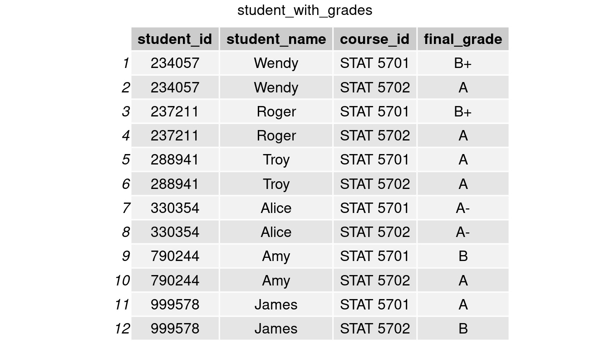

97 Joining and reshaping in R
Yisi Liu
97.1 Motivation
The majority of the analyses we have done in assignments and lectures so far have been based on a single data set. In the real world, however, raw data may be saved in different files or tables, so there may not always be a meta data set containing all of the information. For example, we want a summary table showing how many students are in each department, but department information and student information are kept separate. To begin the analysis, we will need to combine the two or more data sets into a single one and, if necessary, change it into a preferred format.
During my previous intern experience as an analytics engineer, merging and transforming the source data into the desired table is a crucial step. We performed data wrangling and ETL (extract-transform-loading) pipelines with SQL back then. While working on assignments for this class, I surprisingly discovered some comparable functions within dplyr and tidyr, which I will explain in this tutorial.
97.2 Content
- Joining / Merging data sets
-
bind_rows,bind_cols -
inner_join,full_join,left_join,right_join -
semi_join,anti_join
-
- Reshaping data
pivot_longerpivot_wider
97.3 Combining Tables
97.3.1 Setup
We will use student table to walk through the tutorial today. student includes information student_id, student_name, and department_id so far.
set.seed(111)
student <- data.frame('student_id' = sample(100000:999999, 4, replace=FALSE),
'student_name' = c('James','Alice','Amy','Roger'),
'department_id' = c(1,1,3,4))
grid.arrange(tableGrob(student), top = 'student table')97.3.2 Types of Bind
bind_rows()
At the beginning of this semester, two new students Troy and Wendy transferred to our school. Table new_student records their student id, name, and department id (new students’ majors remain undeclared so NA here).
set.seed(123)
new_student = data.frame('student_id' = sample(100000:999999, 2, replace=FALSE),
'student_name' = c('Troy','Wendy'),
'department_id' = NA)
grid.arrange(tableGrob(new_student), top = 'new_student table')For the convenience of future analyses, we want to add new students’ information to our existing student table. To append the rows of new_students onto student, we perform bind_rows() function in dplyr.
student <- bind_rows(student, new_student)
grid.arrange(tableGrob(student), top = 'bind_rows: student & new_student')bind_cols()
In this semester, suppose the first half of students on student table are assigned to take STAT 5701 while the second half to take STAT 5702. A table course records the course id and course name each student takes, but there is no student name.
course = data.frame(
'course_id' = c(rep('STAT 5701',nrow(student)/2),rep('STAT 5702',nrow(student)/2)),
'course_name' = c(rep('Probability',nrow(student)/2),rep('Data Visualization',nrow(student)/2)))
grid.arrange(tableGrob(course), top = 'course table')As we are interested in questions like which class James takes or if Roger and Amy take the same class this year, we want to include these two columns in our student table.
To add an additional column, we use bind_columns() here. Now we are able to tell that James takes STAT 5701, and Roger and Amy are not taking the same class this semester.
bind_c = bind_cols(student, course)
grid.arrange(tableGrob(bind_c) , top = 'bind_rows: student & course')Note: rbind() and cbind() function in base R perform similarly as bind_rows() and bind_cols(). You can find more information about rbind() and cbind() by trying ?rbind and ?cbind.
97.3.3 Mutating Joins
We have shown that bind_cols() could append columns to a table. However, it is less likely that a table with the same number of rows as the primary table would always exist. Consider the case where the student table has 10,000 rows. Another table with 10,000 rows, each indicating a student’s major, would take up a lot of space. A more common way to store relational data is as follows:
department <- data.frame('department_id' = c(1,2,3,4,5),
'department_name' = c('Math','Computer Science',
'Philosophy','Linguistics',
'Economics'))
grid.arrange(tableGrob(student),tableGrob(department), nrow=1, top = 'student table, department table')In this way, the department table will only have to store a modest amount of data. However, the new difficulty is how to link this data to the student table, as we want to know which students belong to which departments.
Keys
We require a common variable (or combination of variables) that uniquely identifies an observation in at least one of the tables and identifies it in the same way across both tables to appropriately align observations between them. This variable is commonly referred to as a ‘key’. department id is the key shared by student and department in our case.
To accommodate the many ways tables are arranged, we require multiple distinct forms of joins. Here is a summary table. https://dplyr.tidyverse.org/reference/mutate-joins.html
| Join types | Meaning |
|---|---|
| inner_join | keep rows that have matching records in both tables |
| full_join | keep rows when there is a match in either left or right table |
| left_join | keep rows from left table, and matched records from right table |
| right_join | keep rows from right table, and matched records from left table |
Now, let’s perform different joins to merge the tables.
inner_join()
join_inner <- inner_join(student, department, by = 'department_id')
grid.arrange(tableGrob(join_inner), top = 'inner join: student & department')full_join()
join_full <- full_join(student, department, by = 'department_id')
grid.arrange(tableGrob(join_full), top = 'full join: student & department')left_join()
join_left <- left_join(student, department, by = 'department_id')
grid.arrange(tableGrob(join_left), top = 'left join: student & department')right_join()
join_right <- right_join(student, department, by = 'department_id')
grid.arrange(tableGrob(join_right), top = 'right join: student & department')Multiple keys
Multiple keys may be required in some circumstances to uniquely identify an observation. Our data sets below, for example, each student has two separate observations, therefore we need to connect them by both student_id and course_id.
student2 <- data.frame('student_id' = rep(student$student_id, 2),
'student_name' = rep(student$student_name, 2),
'course_id' = c(rep('STAT 5701',nrow(student)),rep('STAT 5702',nrow(student)))) %>%
arrange(student_id)
grades <- data.frame('course_id' = c(rep('STAT 5701',nrow(student)),rep('STAT 5702',nrow(student))),
'student_id' = rep(student$student_id, 2),
'final_grade' = c('A','A-','B','B+','A','B+','B','A-','A','A','A','A'))%>%
arrange(course_id, student_id)
grid.arrange(tableGrob(student2),tableGrob(grades), nrow=1, top = 'student2 table, grades table')
student_with_grades = inner_join(student2, grades, by = c('student_id','course_id'))
grid.arrange(tableGrob(student_with_grades), top = 'inner join: student2 & grades')97.3.4 Filtering joins
In addition to mutating joins that add columns to x from y, there are two more filtering joins functions within dplyr. Filtering joins filter rows from x based on the presence or absence of matches in y. https://dplyr.tidyverse.org/reference/filter-joins.html
| Join types | Meaning |
|---|---|
| semi_join | keep rows from left table with a match in right table |
| anti_join | keep rows from left table without a match in right table |
Recall that department_id is the key for both student table and department table, and department_id= {1,3,4} occurs in both tables.

semi_join()
#only keep rows in student table
join_semi1 <- semi_join(student, department, by = 'department_id')
grid.arrange(tableGrob(join_semi1), top = 'semi join: student & department')
#only keep rows in department table
join_semi2 <- semi_join(department,student, by = 'department_id')
grid.arrange(tableGrob(join_semi2), top = 'semi join: department & student')anti_join()
#only keep rows in student table
join_anti1 <- anti_join(student, department, by = 'department_id')
grid.arrange(tableGrob(join_anti1), top = 'anti join: student & department')
#only keep rows in department table
join_anti2 <- anti_join(department, student, by = 'department_id')
grid.arrange(tableGrob(join_anti2), top = 'anti join: department & student')97.3.5 R vs. SQL
The commands for joins in R and SQL are included in the table below. We can see that both languages have mutating/filtering joins.
| dplyr | SQL |
|---|---|
| bind_rows(x, y) | (SELECT * FROM x) UNION (SELECT * FROM y) |
| inner_join(x, y, by = ‘z’) | SELECT * FROM x INNER JOIN y ON x.z = y.z |
| full_join(x, y, by = ‘z’) | SELECT * FROM x FULL OUTER JOIN y ON x.z = y.z |
| left_join(x, y, by = ‘z’) | SELECT * FROM x LEFT JOIN y ON x.z = y.z |
| right_join(x, y, by = ‘z’) | SELECT * FROM x RIGHT JOIN y ON x.z = y.z |
| semi_join(x, y, by = ‘z’) | SELECT x.* FROM x LEFT JOIN y ON x.z = y.z WHERE y.z IS NOT NULL |
| anti_join(x, y, by = ‘z’) | SELECT x.* FROM x LEFT JOIN y ON x.z = y.z WHERE y.z IS NULL |
97.4 Reshaping
pivot_wider()
Recall the table student_with_grades.

The above data makes it difficult to read and compare students’ grades in both classes. Alternatively, we can extract the courses’ names and divide them into two columns, each containing the final grade as the value. We could make such a table with the pivot wider() function in tidyr.
student_with_grades_2 = student_with_grades %>% pivot_wider(names_from = course_id, values_from = final_grade)
grid.arrange(tableGrob(student_with_grades_2), top = 'pivot_wider: student_with_grades_2')pivot_longer()
Conversely, if we are given the ‘wider’ table student_with_grades_2, and want to convert the format to be student_with_grades in order to compare the distribution of final grades between two classes. We can do this by using the pivor_longer() function to reshape the table and plot a side-by-side bar chart from the ‘longer’ table.
student_with_grades_3 <- student_with_grades_2 %>%
pivot_longer(cols = c('STAT 5701','STAT 5702'),
names_to = 'course_id',
values_to = 'final_grade')
grid.arrange(tableGrob(student_with_grades_3), top = 'pivot_longer: student_with_grades_3')
student_with_grades_3 %>%
ggplot(aes(fct_relevel(final_grade,'B', after = 3))) +
geom_bar() +
facet_grid(~course_id) +
ggtitle('Distribution of Final Grades in STAT 5701 & STAT 5702') +
xlab('Final grades')97.5 Self-evaluation
Before starting this project, I only knew mutating joins such as inner_join() and left_join(). I discovered filtering joins like semi_join() and anti_join() while working on it. The filtering joins are extremely useful when we only need data from x based on some standards from y.
In SQL, we normally use the where statement to create such a constraint in x, as seen in the ‘R vs. SQL’ comparison table I included above. This, I believe, is the most intriguing aspect of knowing many data-handling tools: we can always find other approaches that perform the same function.
Due to time constraints, this tutorial only covers as many as ‘merging’ and ‘reshaping’ functions that I am familiar with. If I get another chance, I will go over the parameters in each functions, such as copy, keep, na_matches in mutating joins, to assist everyone understand them better.
97.6 Reference
R4DS Chapter 13: https://r4ds.had.co.nz/relational-data.html